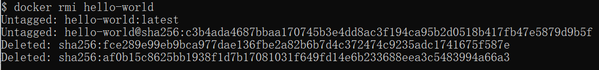

Docker image usage
When running a container, if the image used does not exist locally, Docker will automatically download it from the Docker image repository. By default, it downloads from the Docker Hub public image source.
Now let's learn:
- 1. Managing and using local Docker host images
- 2. Create Image
List Images
We can usedocker imagesTo list images on the local host.
example@example:~$ docker images REPOSITORY TAG IMAGE ID CREATED SIZE ubuntu 14.04 90d5884b1ee0 5 days ago 188 MB php 5.6 f40e9e0f10c8 9 days ago 444.8 MB nginx latest 6f8d099c3adc 12 days ago 182.7 MB mysql 5.6 f2e8d6c772c0 3 weeks ago 324.6 MB httpd latest 02ef73cf1bc0 3 weeks ago 194.4 MB ubuntu 15.10 4e3b13c8a266 4 weeks ago 136.3 MB hello-world latest 690ed74de00f 6 months ago 960 B training/webapp latest 6fae60ef3446 11 months ago 348.8 MB
Description of each option:
-
REPOSITORY：Indicates the repository source of the image.
-
TAG：Image tags
-
IMAGE ID：Image ID
-
CREATED：Image Creation Time
-
SIZE：Image size
The same repository source can have multiple TAGs, representing different versions of the repository source. For example, in the ubuntu repository source, there are multiple versions such as 15.10, 14.04, etc. We use REPOSITORY:TAG to define different images.
Therefore, if we want to use the Ubuntu system image version 15.10 to run a container, the command is as follows:
example@example:~$ docker run -t -i ubuntu:15.10 /bin/bash root@d77ccb2e5cca:/#
Parameter description:
- -i: Interactive operation.
- -t: Terminal.
- ubuntu:15.10This refers to starting a container using the ubuntu 15.10 image as the base.
- /bin/bashAfter the image name is the command. Here we want an interactive Shell, so we use /bin/bash.
If we want to use the Ubuntu system image version 14.04 to run a container, the command is as follows:
example@example:~$ docker run -t -i ubuntu:14.04 /bin/bash root@39e968165990:/#
If you do not specify a version tag for an image, for example, if you only use ubuntu, Docker will use the ubuntu:latest image by default.
Get a new image
When we use an image that does not exist on the local host, Docker will automatically download the image. If we want to download the image in advance, we can use the docker pull command to download it.
Cexample@example:~$ docker pull ubuntu:13.10 13.10: Pulling from library/ubuntu 6599cadaf950: Pull complete 23eda618d451: Pull complete f0be3084efe9: Pull complete 52de432f084b: Pull complete a3ed95caeb02: Pull complete Digest: sha256:15b79a6654811c8d992ebacdfbd5152fcf3d165e374e264076aa435214a947a3 Status: Downloaded newer image for ubuntu:13.10
After the download is complete, we can directly use this image to run a container.
Find images
We can search for images from the Docker Hub website. The Docker Hub URL is:https://hub.docker.com/
We can also use the docker search command to search for images. For example, if we need an httpd image as our web service, we can use the docker search command to search for httpd to find a suitable image.
example@example:~$ docker search httpd
Click the image to view the larger version:

NAME: The name of the image repository source
DESCRIPTION: Image description
OFFICIAL: Whether it is officially published by Docker
stars: Similar to the star in Github, it means approval or liking.
AUTOMATED: Automatic build.
Pull image
We decided to use the official httpd image shown in the figure above, and use the command docker pull to download the image.
example@example:~$ docker pull httpd Using default tag: latest latest: Pulling from library/httpd 8b87079b7a06: Pulling fs layer a3ed95caeb02: Download complete 0d62ec9c6a76: Download complete a329d50397b9: Download complete ea7c1f032b5c: Waiting be44112b72c7: Waiting
After the download is complete, we can use this image.
example@example:~$ docker run httpd
Delete image
To delete an image, usedocker rmiCommand, for example, to delete the hello-world image:
$ docker rmi hello-world

Create image
When the image we downloaded from the Docker image repository does not meet our needs, we can modify the image in the following two ways.
- 1. Update an image from an already created container and commit this image.
- 2. Using Dockerfile instructions to create a new image
Update image
Before updating the image, we need to use the image to create a container.
example@example:~$ docker run -t -i ubuntu:15.10 /bin/bash
After entering the container, update the system:
apt-get update apt-get upgrade -y
After completing the operation, type the exit command to exit this container.
exit
At this point, the container with ID e218edb10161 is the container modified according to our needs. We can use the docker commit command to submit a copy of the container.
example@example:~$ docker commit -m="has update" -a="example" e218edb10161 example/ubuntu:v2 sha256:70bf1840fd7c0d2d8ef0a42a817eb29f854c1af8f7c59fc03ac7bdee9545aff8
Description of each parameter:
-
-m:Description information for the commit
-
-a:Specify the image author
-
e218edb10161：Container ID
-
example/ubuntu:v2:Specify the target image name to be created.
We can usedocker imagesCommand to view our new image.example/ubuntu:v2：
example@example:~$ docker images REPOSITORY TAG IMAGE ID CREATED SIZE example/ubuntu v2 70bf1840fd7c 15 seconds ago 158.5 MB ubuntu 14.04 90d5884b1ee0 5 days ago 188 MB php 5.6 f40e9e0f10c8 9 days ago 444.8 MB nginx latest 6f8d099c3adc 12 days ago 182.7 MB mysql 5.6 f2e8d6c772c0 3 weeks ago 324.6 MB httpd latest 02ef73cf1bc0 3 weeks ago 194.4 MB ubuntu 15.10 4e3b13c8a266 4 weeks ago 136.3 MB hello-world latest 690ed74de00f 6 months ago 960 B training/webapp latest 6fae60ef3446 12 months ago 348.8 MB
Use our new image.example/ubuntuto start a container
example@example:~$ docker run -t -i example/ubuntu:v2 /bin/bash root@1a9fbdeb5da3:/#
Build image
We use the commanddocker buildTo create a new image from scratch. To do this, we need to create a Dockerfile file that contains a set of instructions to tell Docker how to build our image.
example@example:~$ cat Dockerfile FROM centos:6.7 MAINTAINER Fisher "fisher@sudops.com" RUN /bin/echo 'root:123456' |chpasswd RUN useradd example RUN /bin/echo 'example:123456' |chpasswd RUN /bin/echo -e "LANG=\"en_US.UTF-8\"" >/etc/default/local EXPOSE 22 EXPOSE 80 CMD /usr/sbin/sshd -D
Every instruction creates a new layer on the image, and the prefix of every instruction must be uppercase.
The first instruction, FROM, specifies which image source to use.
The RUN instruction tells Docker to execute commands inside the image, such as what to install...
Then we use the Dockerfile file and the docker build command to build an image.
example@example:~$ docker build -t example/centos:6.7 . Sending build context to Docker daemon 17.92 kB Step 1 : FROM centos:6.7 ---> d95b5ca17cc3 Step 2 : MAINTAINER Fisher "fisher@sudops.com" ---> Using cache ---> 0c92299c6f03 Step 3 : RUN /bin/echo 'root:123456' |chpasswd ---> Using cache ---> 0397ce2fbd0a Step 4 : RUN useradd example ......
Parameter description:
-
-t: Specify the target image name to be created.
-
.: The directory where the Dockerfile is located. You can specify the absolute path of the Dockerfile.
Use docker images to see that the created image already exists in the list, with image ID 860c279d2fec.
example@example:~$ docker images REPOSITORY TAG IMAGE ID CREATED SIZE example/centos 6.7 860c279d2fec About a minute ago 190.6 MB example/ubuntu v2 70bf1840fd7c 17 hours ago 158.5 MB ubuntu 14.04 90d5884b1ee0 6 days ago 188 MB php 5.6 f40e9e0f10c8 10 days ago 444.8 MB nginx latest 6f8d099c3adc 12 days ago 182.7 MB mysql 5.6 f2e8d6c772c0 3 weeks ago 324.6 MB httpd latest 02ef73cf1bc0 3 weeks ago 194.4 MB ubuntu 15.10 4e3b13c8a266 5 weeks ago 136.3 MB hello-world latest 690ed74de00f 6 months ago 960 B centos 6.7 d95b5ca17cc3 6 months ago 190.6 MB training/webapp latest 6fae60ef3446 12 months ago 348.8 MB
We can use the new image to create a container.
example@example:~$ docker run -t -i example/centos:6.7 /bin/bash [root@41c28d18b5fb /]# id example uid=500(example) gid=500(example) groups=500(example)
From the above, we can see that the new image already contains the user example we created.
Set image tag
We can use the docker tag command to add a new tag to the image.
example@example:~$ docker tag 860c279d2fec example/centos:dev
docker tag image ID, here it is 860c279d2fec, user name, repository name, and new tag name.
Using the docker images command, we can see that the image with ID 860c279d2fec has an additional tag.
example@example:~$ docker images REPOSITORY TAG IMAGE ID CREATED SIZE example/centos 6.7 860c279d2fec 5 hours ago 190.6 MB example/centos dev 860c279d2fec 5 hours ago 190.6 MB example/ubuntu v2 70bf1840fd7c 22 hours ago 158.5 MB ubuntu 14.04 90d5884b1ee0 6 days ago 188 MB php 5.6 f40e9e0f10c8 10 days ago 444.8 MB nginx latest 6f8d099c3adc 13 days ago 182.7 MB mysql 5.6 f2e8d6c772c0 3 weeks ago 324.6 MB httpd latest 02ef73cf1bc0 3 weeks ago 194.4 MB ubuntu 15.10 4e3b13c8a266 5 weeks ago 136.3 MB hello-world latest 690ed74de00f 6 months ago 960 B centos 6.7 d95b5ca17cc3 6 months ago 190.6 MB training/webapp latest 6fae60ef3446 12 months ago 348.8 MBother extensions